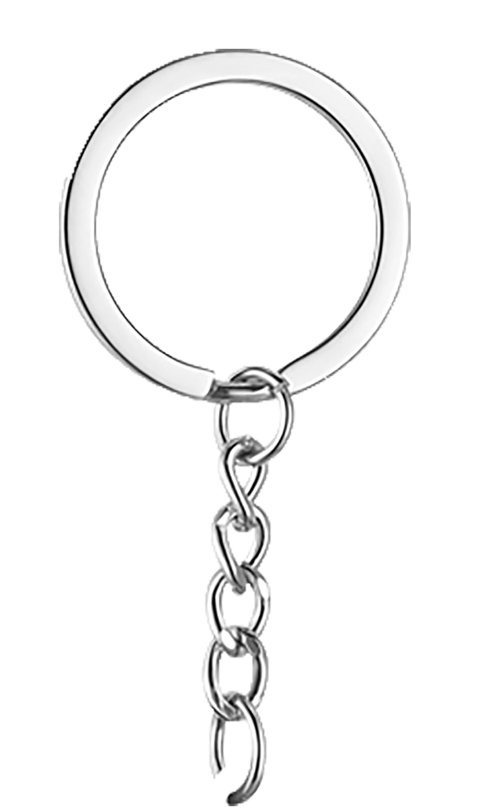

One custom keychain
Custom acrylic keychains from your photo
Preview it free.
Make it real if you love it.
Turn a pet photo, portrait, drawing, logo, or original artwork into a rectangular or custom-shaped acrylic keychain. The browser tool is free; physical production is optional.
Make a free preview
YOURPHOTO
Simple small-batch pricing
Choose the size. See the estimate before you ask.
Two designs or two copies
Mix different designs
Estimated standard tracked shipping is included. Remote destinations, unusual sizes, taxes, and duties are confirmed before invoicing. Orders of four or more receive an individual quote.
Sizes describe the longest side of the finished acrylic body, including the clear border and hanging tab. The metal ring and chain are excluded.
How it works
From image to pocket in four clear steps.
- UploadUse a JPG, PNG, or WEBP you own or have permission to use.
- DesignKeep the full rectangle or erase the background manually for a custom shape.
- ReviewChoose 4, 5, or 6 cm and confirm the exact acrylic-body dimensions shown.
- RequestSend the production ZIP privately. We inspect it and email a proof and PayPal invoice before making anything.
A useful tool shared freely
Technology starts it. Human hands finish it.
The free maker is shared by Tiny County Makers. If you choose a physical keychain, a small workshop in a county town in China prints, cuts, assembles, checks, and packs it.
You are not asked for a donation. The tool is free; the physical craft is fairly paid.
Questions before you create
Custom acrylic keychain FAQ
How much does a custom acrylic keychain cost?
One is estimated at $14.99, two at $24.99, and three at $32.99. Standard tracked shipping is included under the conditions explained above.
What size can I choose?
Choose a 4 cm, 5 cm, or 6 cm longest side. This measurement is for the acrylic body, not the metal hardware.
Can I make a keychain from a photo?
Yes. Upload a supported image, choose a rectangle or manually remove the background, then preview the finished piece.
Do I have to order?
No. You can use the maker and download your files without signing up, adding an email address, or buying anything.